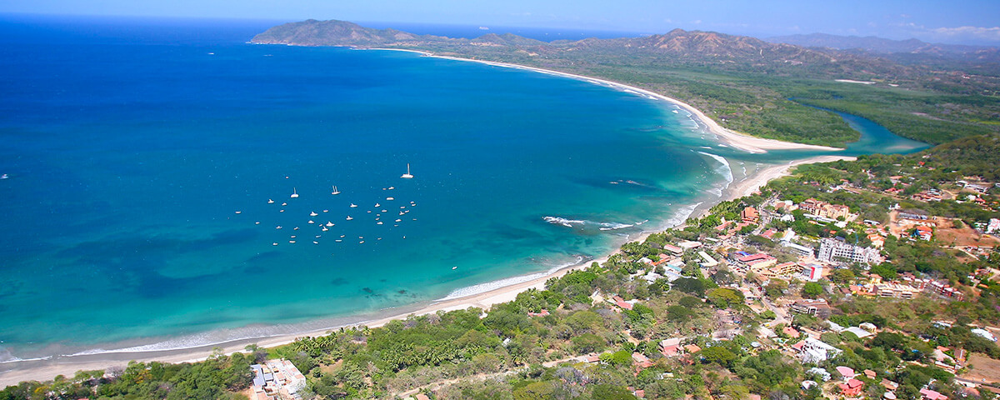

Tamarindo


1. Tamarindo: crucero al atardecer en catamarán Dream Chaser
Descubra pintorescas playas solitarias en un crucero en catamarán de 5 horas. Benefíciese de relajantes áreas de descanso, barra libre, almuerzo buffet, equipo de snorkel y tablas de remo. Suba a bordo del catamarán Dream Chaser de 40 pies y navegue por la costa norte y, según las condiciones climáticas del día, fondee en las apartadas playas de Playa Minas, Playa Huevo o Piratas Bay. Sumérjase en las refrescantes aguas y pruebe actividades acuáticas como esnórquel, remo y jugar con los flotadores (fideos). Deléitese con un delicioso buffet casero y disfrute de un bar abierto donde puede obtener refrescos, licores y bebidas mezcladas ilimitadas. Descanse en la espaciosa cubierta superior mientras escucha un moderno sistema de sonido. Refrésquese en la cabina principal a la sombra, relájese en los cómodos asientos de cuero y utilice la conexión Wi-Fi gratuita. Mientras regresa a Playa Tamarindo, disfrute de vistas inolvidables de la puesta de sol de Costa Rica sobre el Océano Pacífico.
2. Playa Tamarindo: crucero y esnórquel al atardecer
Navega por la costa de Oro de Costa Rica en un crucero al atardecer de 4 horas y media y pasa por las exóticas bahías, las playas de arena blanca y las selvas tropicales de Guanacaste. Explora los mares buscando delfines, tortugas marinas, peces voladores o incluso alguna ballena saliendo a la superficie mientras miras desde la proa con una bebida tropical bien fría en la mano. Haz una parada en una bahía tranquila, echa el ancla y disfruta de un baño. Haz esnórquel en la bahía o pasea por una playa de arena blanca desértica. Mientras disfrutas del sol, la arena, y el mar, el equipo preparará un almuerzo con ensalada de pollo o de pasta, fruta, patatas fritas, pico de gallo, guacamole y galletas caseras con virutas de chocolate. Cuando se ponga el sol, verás cómo van cambiando los colores del cielo mientras disfrutas de tu bebida preferida en la barra libre del barco. Captura el momento para mostrar a tu familia y amigos las maravillas de una puesta de sol en Costa Rica.